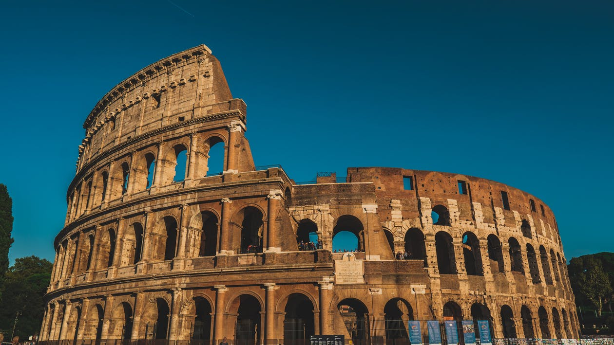
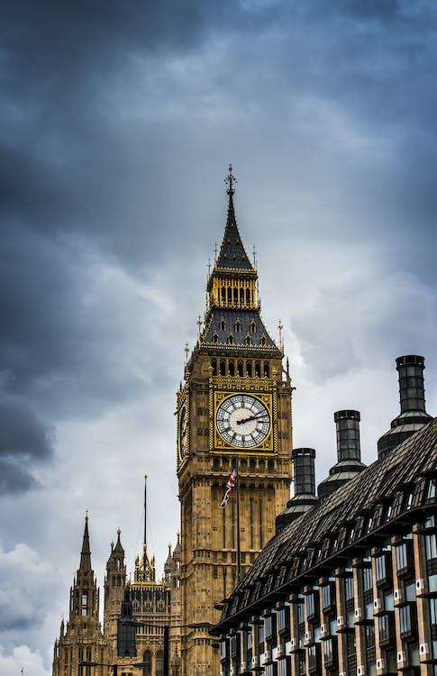
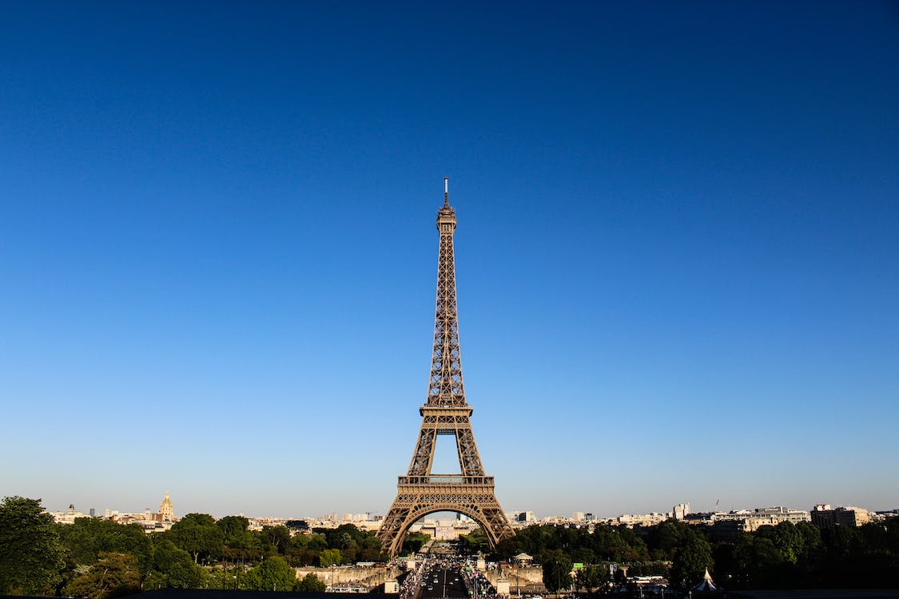

Roma - Itália
Roma, a capital da Itália, é uma cidade cosmopolita, enorme, com quase 3.000 anos de arte, arquitetura e cultura influentes no mundo todo e à mostra. Ruínas antigas como o Fórum e o Coliseu evocam o poder do antigo Império Romano. A Cidade do Vaticano, sede da Igreja Católica Romana, tem a Basílica de São Pedro e os museus do Vaticano, que abrigam obras-primas como os afrescos da Capela Sistina de Michelângelo.
Londres - Reino Unido

Londres, capital da Inglaterra e do Reino Unido, é uma cidade do século 21 com uma história que remonta à era romana. Seu centro abriga as sedes imponentes do Parlamento, a famosa torre do relógio do Big Ben e a Abadia de Westminster, local de coroação dos monarcas britânicos. Do outro lado do rio Tâmisa, a roda gigante London Eye tem vista panorâmica do complexo cultural da margem sul e de toda a cidade.
Paris - França
Paris, a capital da França, é uma importante cidade europeia e um centro mundial de arte, moda, gastronomia e cultura. Sua paisagem urbana do século XIX é cortada por avenidas largas e pelo rio Sena. A cidade é conhecida por monumentos como a Torre Eiffel e a Catedral de Notre-Dame, uma construção gótica do século XII, sendo famosa também pela cultura dos cafés e por lojas de estilistas famosos na Rue du Faubourg Saint-Honoré
Cadastre-se e tenha acesso aos melhores preços de passagens para os principais destinos europeus!